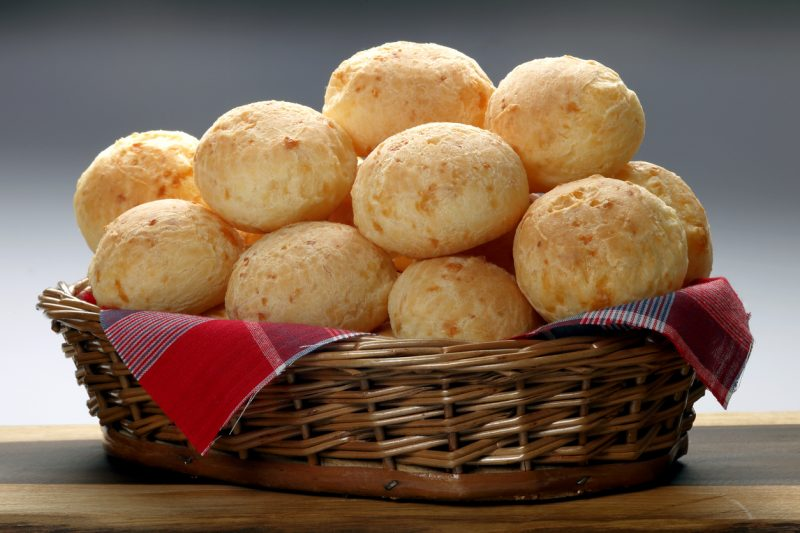

Pao de Queijo
Image

INGREDIENTS
- 2 glasses of milk
- 1 glass of water
- 1/3 of an American cup of oil
- 1 tablespoon of salt
- 500 g of sweet sprinkle
- grated cheese to taste
- 3 whole eggs
HOW TO DO
- Boil the milk with the water and oil.
- In a bowl mix the flour and salt.
- Throw in the boiled liquid and mix with a large spoon.
- Expect to cool down and pour the grated cheese and eggs.
- Mix the dough with your hand kneading well until it turns into a hard homemade glue.
- Make balls the size you prefer.
- Bake in a very hot oven until golden.
Back